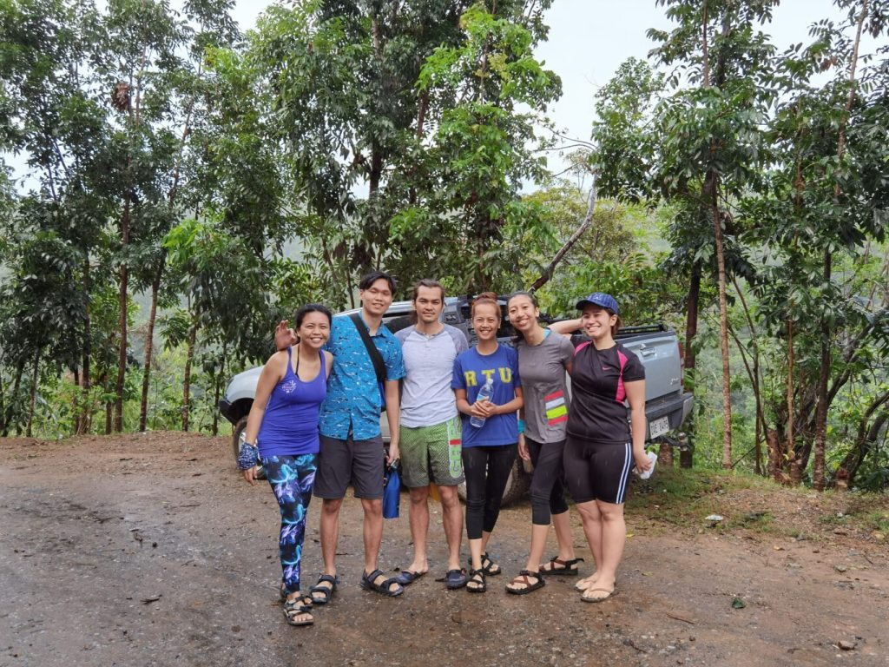
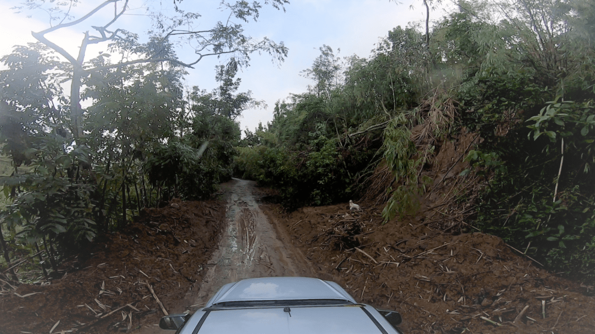
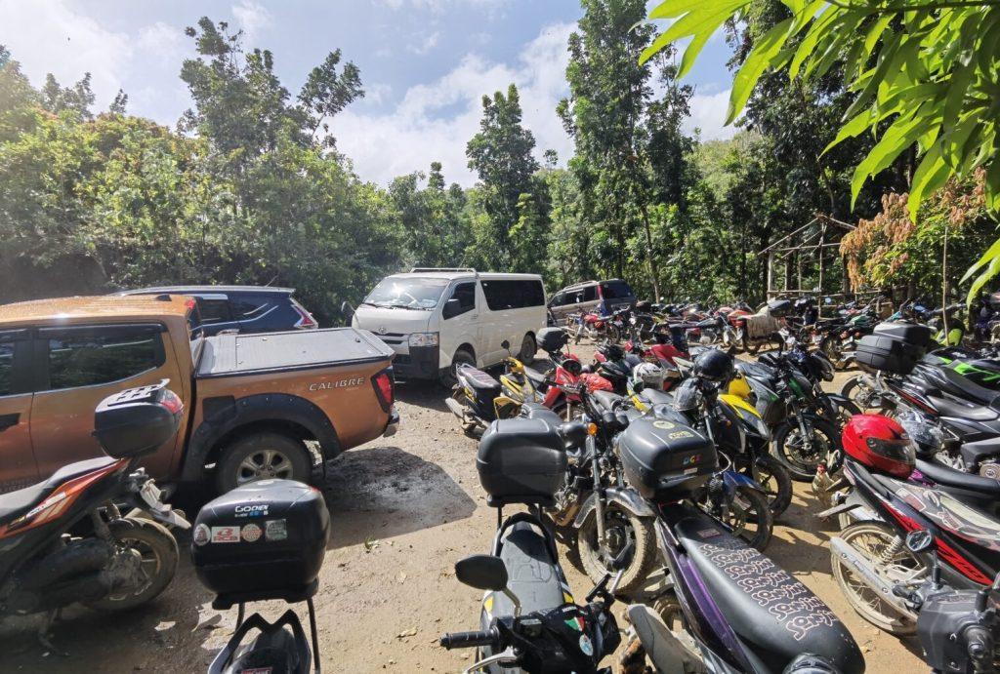
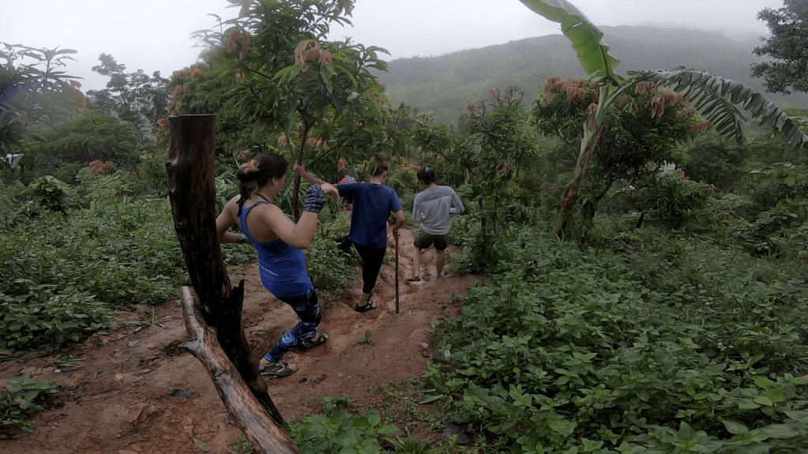
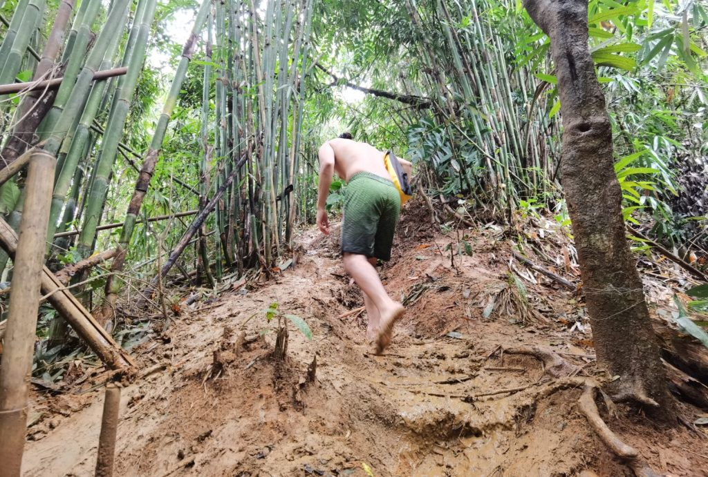

The 13th Waterfalls

Posted on 4th February 2021
The 13 Falls is made up of a series of 13 mini waterfalls that you may traverse through an exhilarating rock formations. Some waterfalls are high and the waters are very deep, but some are shallow. You must take full care when trekking across the rocky paths because there are portions that are very slippery and risky to climb. Also, you will surely get wet so bringing loads of stuff that you don't want to get wet is not advisable. Since in some areas, it is a lot easier to simply swim across the waters rather than risk yourself in climbing the rocky and slippery side of the hills, or going over huge rocks blocking the way.
The Jumpoff
  By: TheWanderers
Getting to the jumpoff requires you to ride a 4×4 vehicle because of the very rough road especially towards the end. Thankfully, our friend brought a 4×4 pick-up. There were parts of the road with nothing but big rocks. Motorcycles can also go through but riders have to be extremely careful especially when rainy. It took 30 mins to arrive at the jumpoff. We could only see 1 vehicle that came before us when we got there at 8 am. Upon returning thereafter the 13 falls trail, there was already a sea of vehicles and motorcycles.
The Trail
 By: TheWanderers
Since it was raining the previous days, the trail was really muddy when we were starting, and even muddier during our return since countless visitors have already stomped the ground. Luckily we were one of the first groups who arrived so we didn’t encounter many other people on the trail except when we were returning. Social distancing was not in effect, and it seems that there was no limit on the maximum capacity.
13 Falls is actually a Waterfall Cascade!
Arriving at the first waterfalls, we were welcomed by a short drop of greenish-brownish water. The guide said that the second waterfall is just the one on the higher level. Technically, 13 falls is just a cascade of small waterfalls that are close to each other. The two best drops are Falls #7 aka Adarna Falls and Falls #8. We mostly just passed by the smaller cascades and took our time swimming at the highlight falls #7 where we got some back massage from the falls, #8 where we cliff-jumped, and #13 with a larger pool. Even though the water was not clear, we still enjoyed swimming and cliff jumping. The following photos are screenshots from videos from our GoPro. For sure, the water would be a lot clearer under better weather. there was already a sea of vehicles and motorcycles.
Final Tips For Visitors of 13 Falls DRT Bulacan
Overall, 13 Falls in DRT Bulacan is highly recommended for adventurers who really want to take a break from being quarantined at home. We loved hiking while being excited about how the next falls would look. The water was cool and refreshing. Here are my tips if you’re planning to visit, too.
Found this helpful? Sharing is Caring!
Photo credits: Anthony Tuana and Joel Luna